Chekhov's Gun
2018
Using a network of microphones dispersed throughout a city, ShotSpotter triangulates the location of a gunshot by comparing the distance from its point of origin to the three closest microphones. ShotSpotter installs and maintains these systems themselves, renting access to local police departments. Besides real-time surveillance, the proprietary data which ShotSpotter collects is fed into the company’s machine learning dataset and spun off into predictive policing programs which police departments may also subscribe to. Oftentimes, the data must be retrofit by human analysts to substantiate the claims made by police officers in court.
In Three Sisters, a group of technical support engineers (employed by ShotSpotter to visually confirm that the soundwaves selected by ShotSpotter’s algorithm are gunfire and that the time signatures have been correctly synced for echolocation) rehearse a dialogue based on court transcripts in which ShotSpotter employees testify to the efficacy of the gunshot detection system. The staging of the three employees anticipates the triangulation of gunfire, while the displaced audio examines the variances between human and machine acoustic perception.
Other works explore the use and interpretation of sound as evidence, including an acoustic diffuser produced from a Chicago homicide prediction map (Diffuser/Defuser); a group of screenprints recording mishearings in ShotSpotter employee testimony (sounds like trouble i-iii); and a group of embossings of gunfire waveforms recorded by ShotSpotter for their machine learning database, here encoded for compact disc, the technological standard for courtroom evidence (sounds like trouble iv-vi).
A series of acoustic interventions used a purpose-built parametric speaker to disrupt the ShotSpotter system and communicate with ShotSpotter's technical support engineers, isolating an individual microphone in Chicago from its intended function in the network (Product Demonstration).
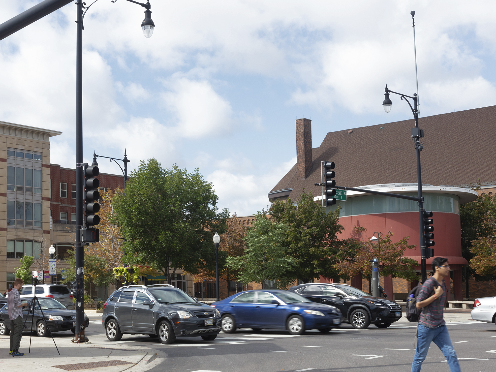
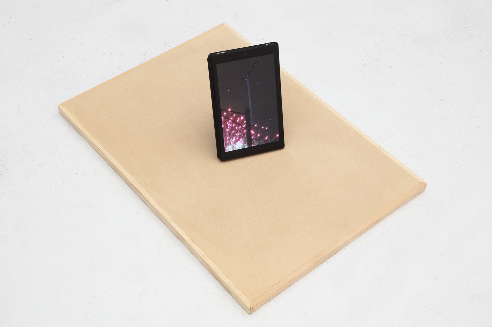
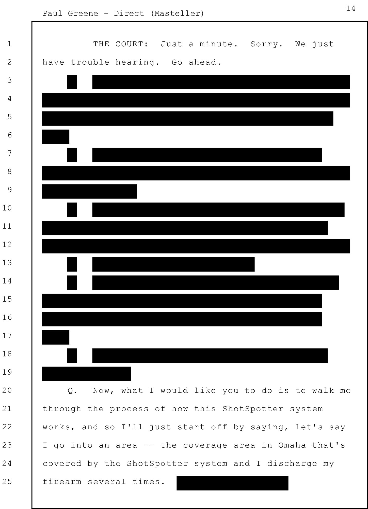 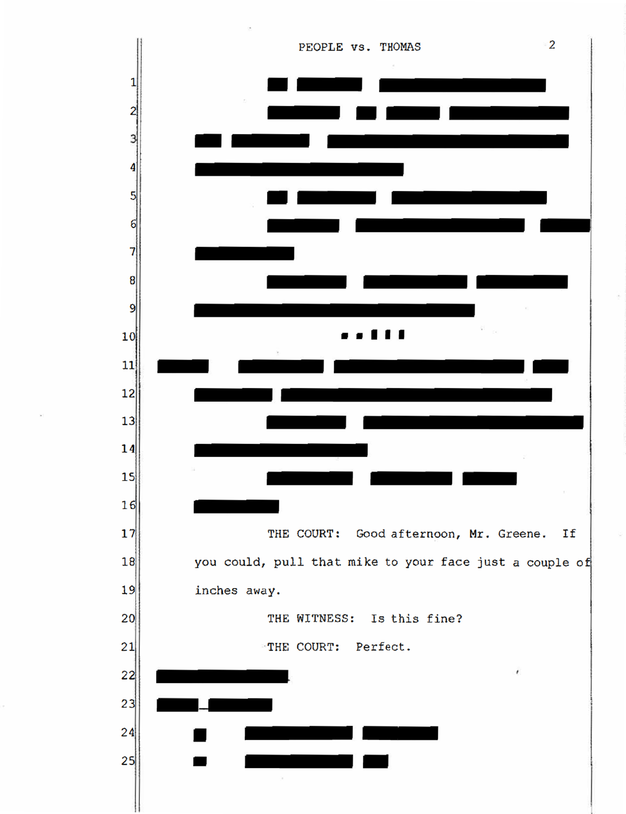 
 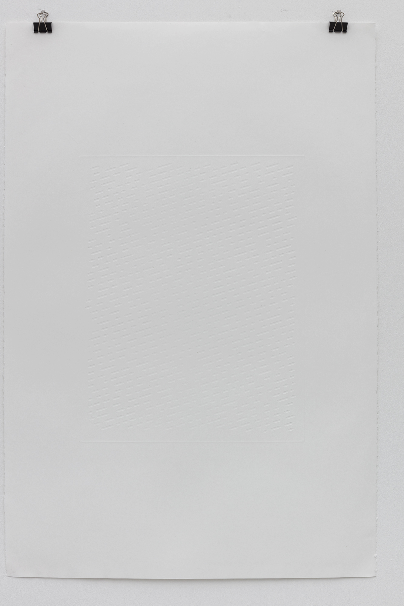 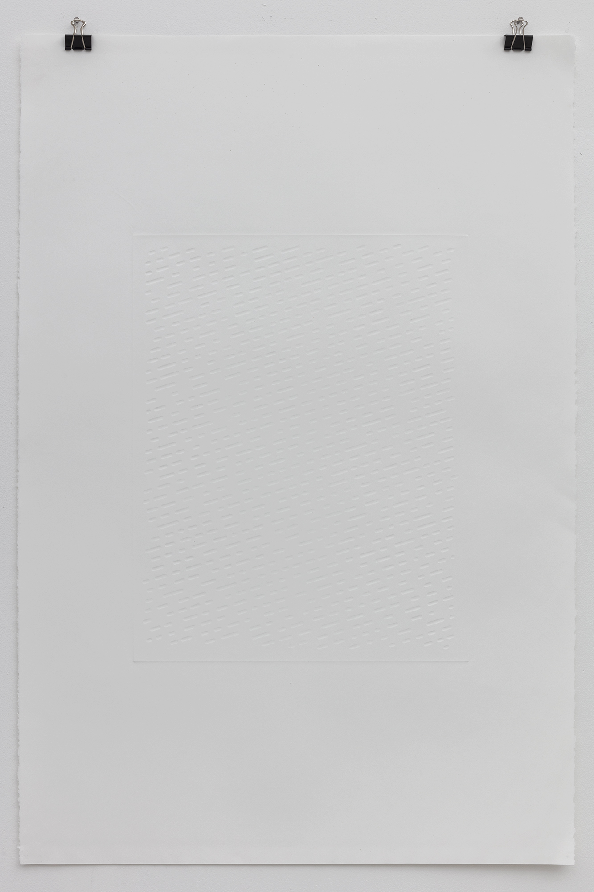
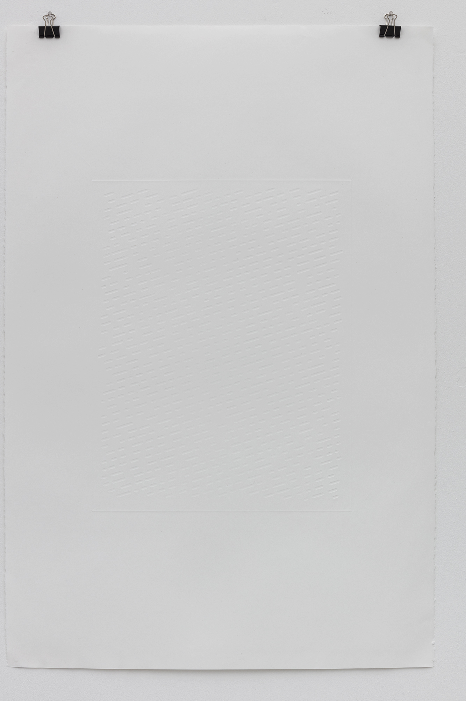 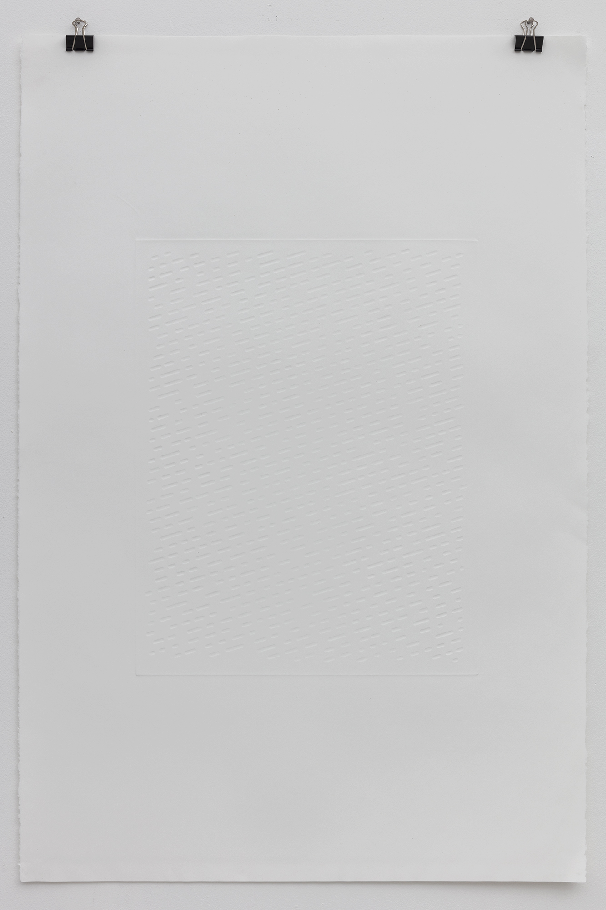
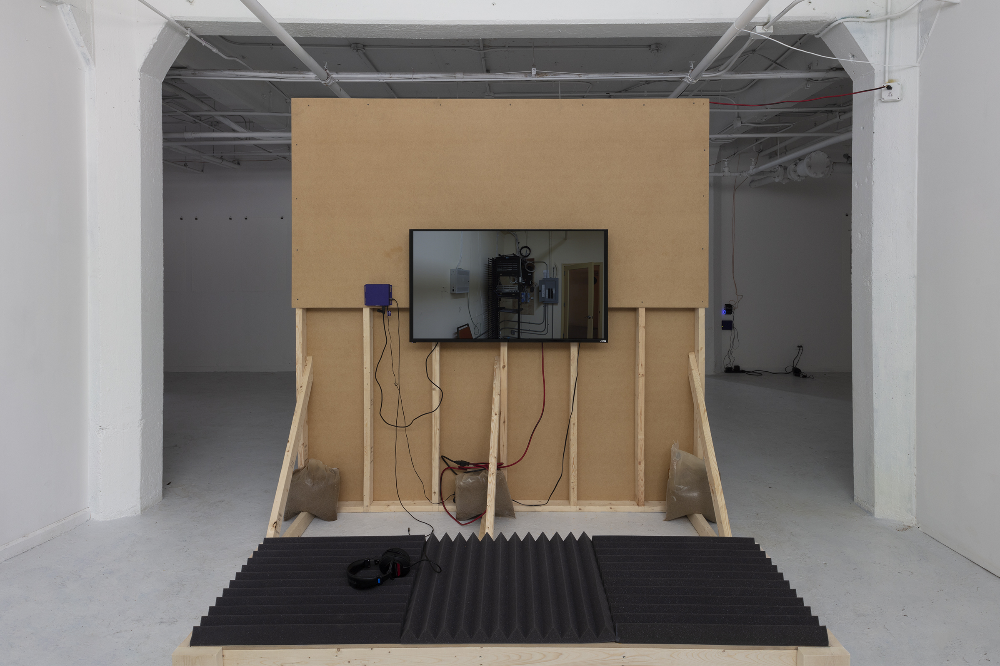
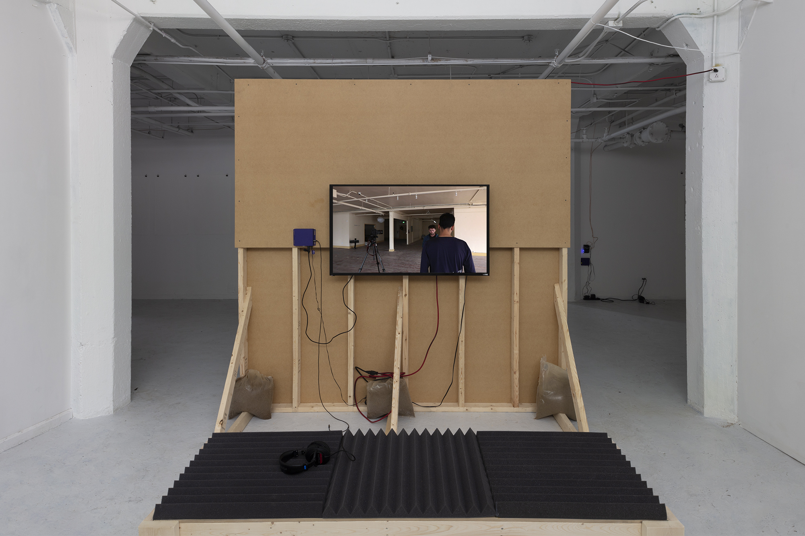
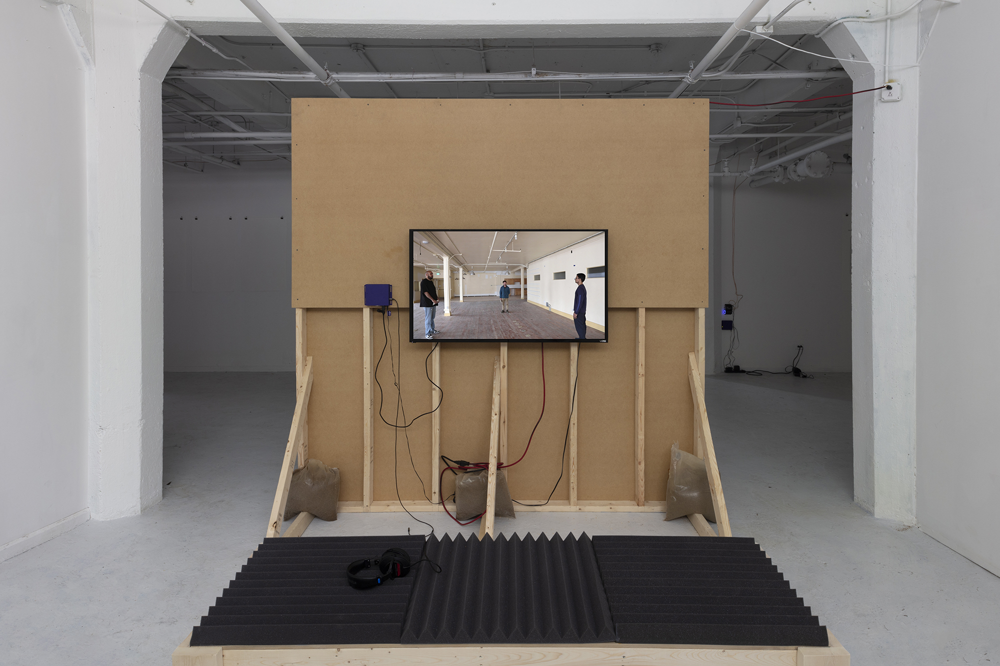
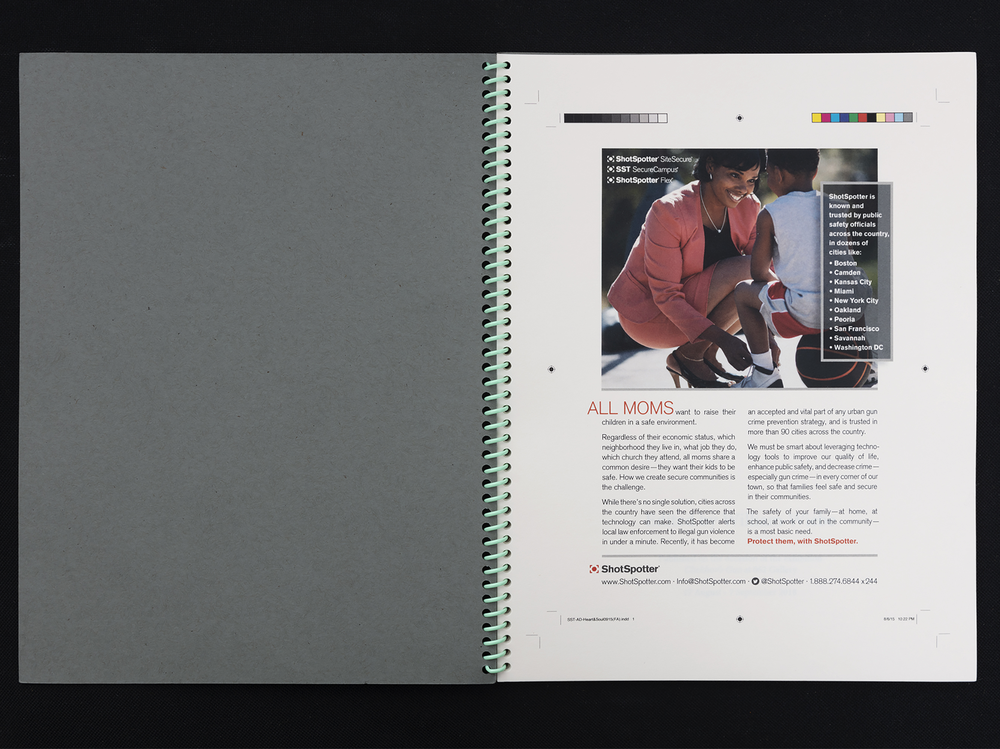
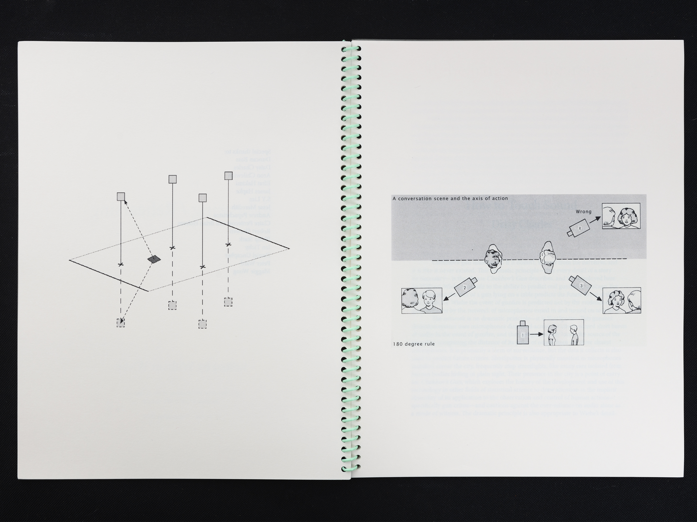